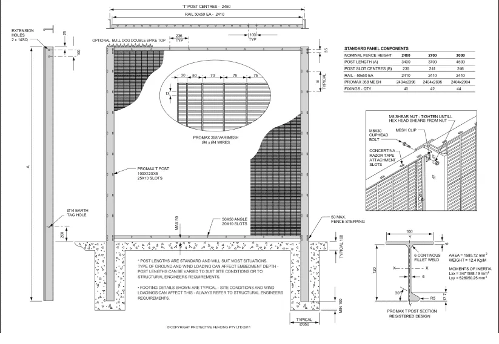
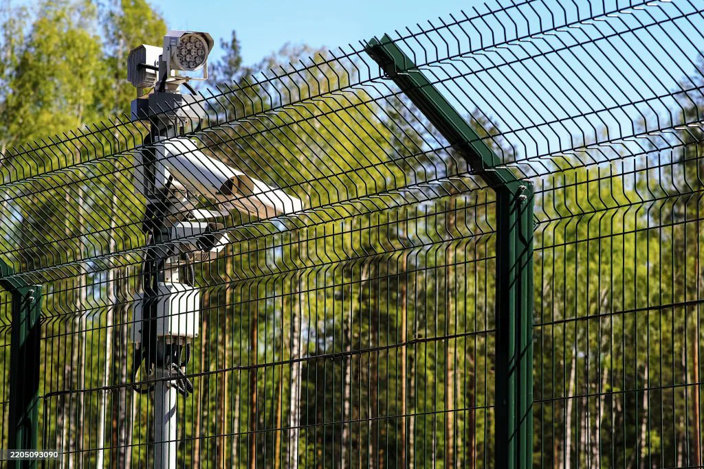

Line 3 Is Now Running at Full Speed
Following a six-month commissioning and ramp-up program, Automated Production Line 3 at our main manufacturing facility has reached full operational capacity. The new CNC welding line is now producing welded wire mesh panels and rolls around the clock, delivering 40% faster throughput than our previous generation equipment while holding the tightest tolerances we have ever offered in volume production.

Built for Speed and Precision
Line 3 pairs computer-controlled resistance welding with robotic wire feeding and panel handling. Every weld schedule — current, pressure, and time — is programmed and monitored at each intersection, so joint strength stays consistent from the first panel of a batch to the last. Servo-driven straightening and positioning systems keep wire alignment within ±0.5mm across the full panel width, and automatic changeovers allow us to switch between mesh configurations in minutes rather than hours.
Zero-Defect Quality Control
The line's most important feature is not its speed — it is what happens when something drifts out of specification. In-line vision systems and weld-parameter monitoring inspect every weld point in real time. Any deviation triggers an immediate alert, automatic segregation of the affected section, and root-cause logging into our quality database. Over the first three months of full production, this closed-loop system has delivered a zero-defect record on outgoing batches, with every panel traceable back to its wire lot, weld schedule, and operator shift.

By the Numbers
The table below summarizes measured performance of Line 3 against the previous generation line it replaces, based on commissioning data and the first quarter of full-rate production.
| Metric | Previous Generation | Line 3 |
|---|---|---|
| Throughput | Baseline | +40% |
| Dimensional tolerance | ±1.0mm | ±0.5mm |
| Changeover time | 2–3 hours | Under 15 minutes |
| Weld inspection | Sampling | 100% in-line, real time |
| Outgoing defect rate | <0.3% | Zero-defect record |
Smarter, Safer, More Sustainable
Automation also changes the work itself. Operators have moved from repetitive manual welding into supervisory, maintenance, and data-analysis roles supported by a structured retraining program. Precision power management on the new line reduces energy consumption per ton of output, and optimized wire handling has cut material waste at changeovers by more than 70%. Faster, cleaner, and quieter — Line 3 reflects our belief that a production line should be as engineered as the products it makes.
What This Means for Customers
With Line 3 at full capacity, standard welded mesh products now ship faster, custom configurations are more economical at any volume, and quality documentation is more complete than ever. Combined with our expanded facility, the line gives us headroom to absorb large infrastructure orders without extending lead times for existing customers. Contact our sales team to discuss schedules for your next project.
Need high-volume welded wire mesh with certified, zero-defect quality? Kestrel Metal delivers standard and custom panels with full batch traceability and worldwide shipping. Request a Quote